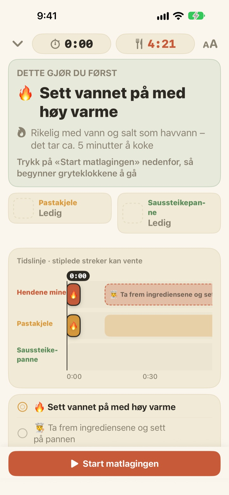
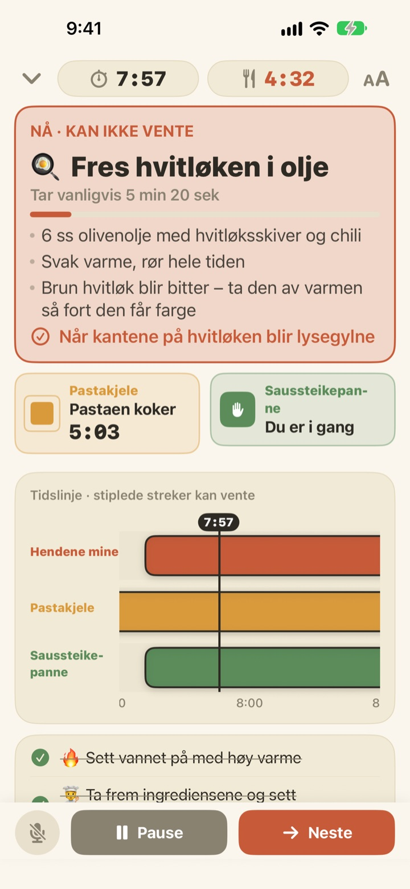
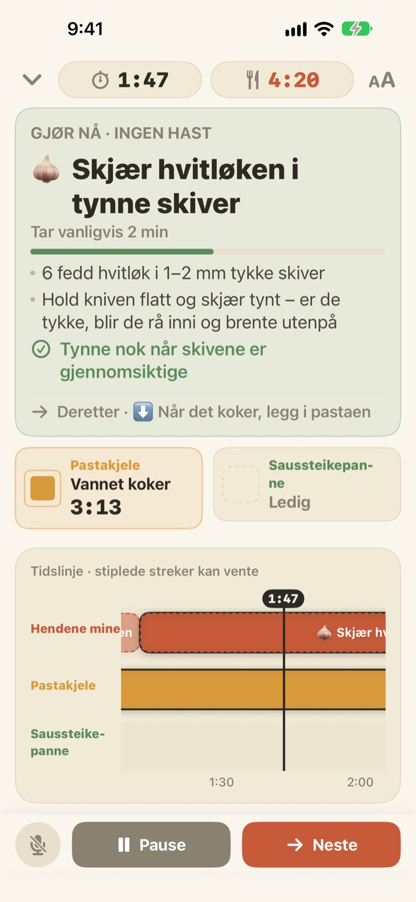
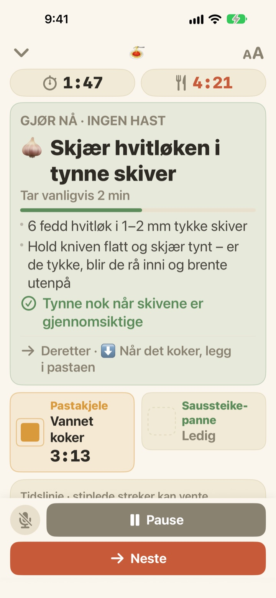

Pastaen koker.
Imens blir sausen ferdig.
Når to kjeler går i hvert sitt tempo, viser Geusaie med stor tekst den ene tingen hendene dine skal gjøre akkurat nå. Sausen beregnes baklengs fra øyeblikket pastaen skal siles.
Alle funksjoner er gratis. Ingen konto trengs.

Prøv selv
Lag en porsjon aglio e olio i 20 ganger fart. Trykk på Start matlagingen, og trykk deretter på Neste hver gang du ville vært ferdig med en oppgave. Se hvordan kortet endrer seg når det er tid for å sile pastaen.
Tre tidtakere i gang, og pastaen ble likevel bløt?
Én tidtaker for pastaen, én for sausen og hvitløken i hodet, og plutselig vet du ikke hva som kommer først. Du står og kutter akkurat når pastaen skal siles, og sausen blir to minutter forsinket. Geusaie kjenner oppskriften som «først dette, så det», og forteller deg bare den ene tingen du skal gjøre nå.
Det som ikke kan vente, blir rødt
Sile pastaen, hvitløk like før den brenner seg: Når en oppgave vil ødelegge maten om den blir forsinket, blir kortet terrakottafarget og ber deg legge fra deg kuttingen et øyeblikk.
Når en kjele er ferdig, får du et varsel selv om du ikke ser på skjermen, sammen med det du må gjøre med en gang.

Kutting når hendene er ledige
Kutte hvitløk, rive ost, måle opp: ingenting av dette har et fast klokkeslett, så det telles ikke sekunder her. Linjen fylles mens hendene er ledige, stopper når en kjele roper, og fortsetter der du slapp.
Slår du på platen tre minutter for sent, flyttes alt etterpå tre minutter. Planen regnes ut på nytt fra det du faktisk har gjort.

Sett den på benken, gå videre med stemmen
Fire tekststørrelser, så du kan lese den fra et par skritt unna, og skjermen slukker ikke mens du lager mat.
Våte hender? Si neste, så går appen videre til neste oppgave uten berøring.

Tre steg til middag
- 1
Velg en rett
Du ser omtrent hvor lang tid den tar og hvor mange kjeler du trenger.
- 2
Trykk på Start matlagingen
Først vises den første oppgaven, og kjeleklokkene starter i det du trykker.
- 3
Ferdig? Neste.
Trykk på knappen eller si «neste», så dukker neste oppgave opp.
Fargen viser hvor mye det haster
- Grønn
- Forberedelse. Ta den med ro.
- Sennepsgul
- En kjele trenger deg. Gjør det nå, men uten stress.
- Terrakotta
- Venter du, blir pastaen bløt eller hvitløken brent. Gjør det nå.
- Kjelefelter
- Firkanten som krymper er tiden som er igjen. Kjeletiden skjules aldri.
På tidslinjen er stiplede felt oppgaver som kan vente.
Alle funksjoner er gratis
Gratis
- Begge oppskriftene
- En tidtaker for hver kjele og hele tidslinjen
- Varsel når en kjele er ferdig
- «Neste» med stemmen
- Fire tekststørrelser
- Åpne en oppskrift med Siri eller Snarveier
Støtt utvikleren (frivillig)
- Hvis appen hjelper deg, kan du gi et lite tips i Innstillinger
- Tips låser ikke opp noe. Uten tips har du fortsatt alle funksjonene
Engangsbeløp, ikke abonnement.
Ingen konto, ingen reklame, og den fungerer uten internett.
Vanlige spørsmål
Jeg sier «neste», men ingenting skjer.
Mikrofonknappen nede til venstre er rød mens appen lytter, og grå når den er av. Første gang må du gi tilgang til både mikrofon og talegjenkjenning. Har du sagt nei, kan du slå dem på igjen i Innstillinger > Geusaie. Appen lytter etter ordet som står på Neste-knappen. På et veldig bråkete kjøkken trykker du bare på Neste.
En kjele ble ferdig, men jeg fikk ikke noe varsel.
Sjekk at varslinger er slått på i Innstillinger > Varslinger > Geusaie. En fokusmodus kan dempe dem. Varsler kommer bare når en kjele er ferdig; forberedelsene maser aldri på deg.
Hva skjer med planen hvis jeg starter senere?
Den regnes ut på nytt fra det du faktisk har gjort. Slår du på platen tre minutter senere, flyttes alt etterpå tre minutter, og sausen beregnes fortsatt baklengs fra når pastaen er klar.
Teksten er for liten.
Trykk på knappen for tekststørrelse øverst til høyre på matlagingsskjermen, og velg Normal, Stor, Større eller Størst. Valget blir husket.
Slukker skjermen mens jeg lager mat?
Nei. Skjermen holder seg på mens du lager mat, så du slipper å ta på den med våte hender.
Hvilke retter er med?
Aglio e olio (omtrent 15 minutter, 2 kjeler) og pasta i tomat- og fløtesaus (omtrent 20 minutter, 2 kjeler), basert på oppskrifter fra Serious Eats, Gimme Some Oven, RecipeTin Eats og The Burnt Butter Table. Alle retter med to kjeler i gang samtidig passer godt, så si gjerne fra hva du vil se.
Blir stemmen min tatt opp?
Nei. Appen lytter bare etter ordet «neste» og tar ikke opp eller lagrer lyd. Hvis enheten støtter det, skjer talegjenkjenningen på selve enheten. Ingen personopplysninger samles inn.
Kan jeg åpne den med Siri?
Ja. Velg en rett i Siri eller Snarveier-appen, så åpnes matlagingsskjermen med en gang. Klokkene starter først når du er klar til å sette på vannet og trykker på Start matlagingen.
Hvilke enheter fungerer den på?
iPhone og iPad med iOS 17 eller nyere. Ingen konto eller internettforbindelse trengs.
Hvordan melder jeg fra om feil eller foreslår en oppskrift?
Via Innstillinger > Send tilbakemelding i appen, eller på e-post til adressen nedenfor. Ta gjerne med enhetsmodell og iOS-versjon, så kan vi se på det raskere. Vi svarer vanligvis innen noen dager.
Står du fast, har du sett noe rart, eller har du en oppskrift i tankene? Skriv til leeo@kakao.com.